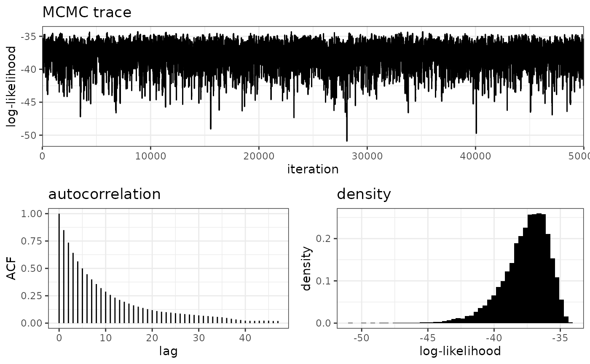
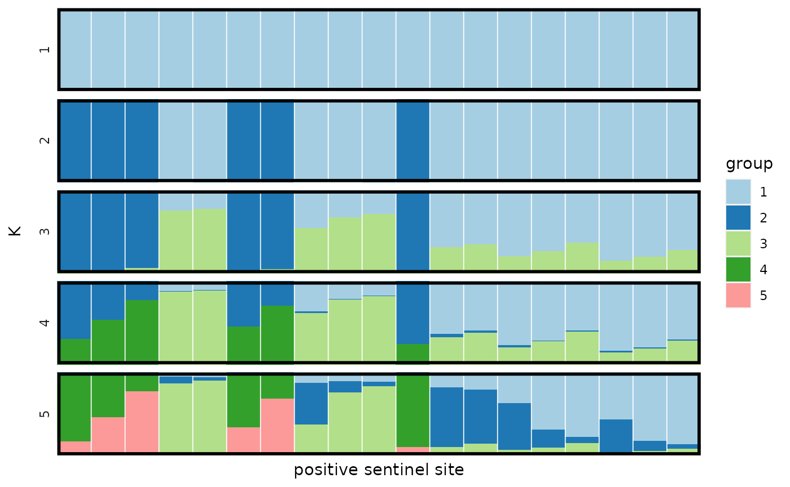
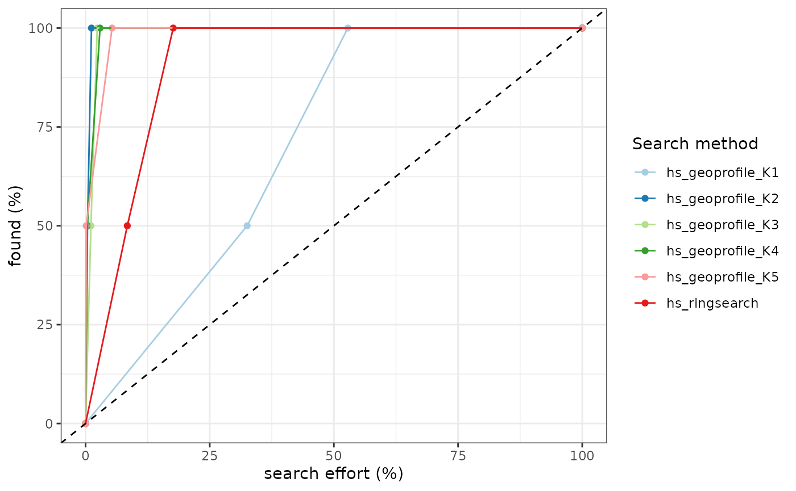

A Poisson model for count data
Michael Stevens
2021-02-27
Source:vignettes/Poisson-basic-implementation.Rmd
Poisson-basic-implementation.RmdIntroduction
The following tutorial will introduce the user to the general structure required to run silverblaze when analysing count data. The protocol of silverblaze is to create one fundamental object, referred to in these tutorials as p, that describes the entire project. The structure of p consists of:
- The data used to run the model
- The parameter settings for the model
- The output of running the model
Following this, the user will learn how to plot and diagnose the output of the model.
Simulating data
Before any data simulation happens, we must first define the sentinel site locations for the data.
sentinal_lon <- seq(-0.2, 0.0, l = 10)
sentinal_lat <- seq(51.45, 51.55, l = 10)
sentinal_grid <- expand.grid(sentinal_lon, sentinal_lat)
names(sentinal_grid) <- c("longitude", "latitude")Here we've chosen a lattice configuration but the user may define any list of longitude/latitude locations they would like. With these sentinel sites we can generate our data from a given model using sim_data().
mysim <- rgeoprofile_file("tutorial1_mysim.rds")
mysim <- sim_data(sentinal_grid$longitude,
sentinal_grid$latitude,
sentinel_radius = 0.25,
K = 2,
sigma_model = "single",
sigma_mean = 2,
sigma_var = 0.5,
expected_popsize = 300)These parameters describe the underlying behaviour of the data in question:
-
sentinal_radiusdescribes the overall reach of our sentinel sites, in Km. -
Kis the number of sources with which individuals are spatially distributed. -
sigma_modeldefines homogeneity or independence of dispersal across sources. -
sigma_meanandsigma_vargovern the dispersal associated with each source. Setsigma_var = 0to set an explicit dispersal viasigma_mean(in Km). -
expected_popsizetells us how many individuals we expect to see over our search area. The true value is drawn from a Poisson distribution with this expectation.
From the simulation we can extract two key objects: the true sources and a record of which individuals were captured and where.
true_source <- mysim$record$true_source
data_all <- mysim$record$data_allWe will require these objects for plotting later on.
head(mysim$data)## longitude latitude counts
## 1 -0.20000000 51.45 0
## 2 -0.17777778 51.45 0
## 3 -0.15555556 51.45 0
## 4 -0.13333333 51.45 0
## 5 -0.11111111 51.45 0
## 6 -0.08888889 51.45 0Here we see the general structure of the data required to run this model. That is, a collection of sentinel sites and their respective number of counts. This mysim$data object is the only piece of information required for the user to run the model. All other outputs from mysim$data are merely a consequence of simulating the data in the first place.
Creating a project
We initialise a blank project p using the rgeoprofile_project() function.
p <- rgeoprofile_project()We then add in our simulated data using bind_data().
p <- bind_data(p,
df = mysim$data,
data_type = "counts")Simple spatial prior
There are a few priors we wish to impose on our model. Let's start with the prior on source locations. Here we implement a very simple one by instructing the model to restrict the area of interest to to that which contains our sentinel sites plus some guardRail. We can produce a uniform spatial prior with the raster_grid() function.
uniform_prior <- raster_grid(range_lon = c(-0.2, 0),
range_lat = c(51.45, 51.55),
cells_lon = 100,
cells_lat = 100,
guard_rail = 0.1)Here we can see our spatial prior mapped out.
Parameter sets
Next we explicitly tell the model which priors we will be using for source locations and the remaining variables we wish to estimate. We define these parameters via new_set(). Notice the project p is one of the function's arguments. This is such that the parameter set we define is added into our project.
p <- new_set(project = p,
spatial_prior = uniform_prior,
sentinel_radius = 0.25,
sigma_model = "single", # sigma is the same for each source location
sigma_prior_mean = 1, # set a prior mean of 1km for sigma
sigma_prior_sd = 1, # set the standard devation for this sigma prior
expected_popsize_prior_mean = 200, # set the mean of the prior on expected population size
expected_popsize_prior_sd = 30, # set the standard deviation of this prior
name = "Tutorial Parameters") # name the parameter set
p## DATA:
## type: count
## sentinel sites = 100 (19 positive, 81 negative)
## total observations = 27
##
## PARAMETER SETS:
## * SET1: Tutorial Parameters
##
## ACTIVE SET: SET1
## sentinel radius = 0.25
## dispersal/decay kernel = normal
## spatial prior:
## longitude range = [-0.21, 0.01]
## latitude range = [51.445, 51.555]
## area (km^2) = 185.816
## cells = 100, 100 (lon, lat)
## sigma prior:
## model = single
## prior mean = 1
## prior SD = 1
## expected population size prior:
## model = single
## prior mean = 200
## prior SD = 30The project p is now taking shape as we have provided the data and parameters for the model. Each time the new_set() function is run it will add a new set of parameters to p$parameters_sets and will regard this new set as the active_set. To delete an old parameter set, we use delete_set(). The "output" object within p is empty right now, but will be populated once the model has run.
Running the model
We are now ready to run the MCMC algorithm on our data. The arguments in run_mcmc() are similar to many other MCMC implementations. The algorithm will start with the burn-in phase, checking for convergence in multiples of convergence_test iterations. The MCMC will then move into the sampling phase once the conditions for convergence have been met or the number of burn-in iterations has been reached. The argument K governs how many sources the model should search for. Although we simulated the data, and know the true underlying number of sources, this will rarely be the case with a real-world data set. Hence K can take a single value or a sequence of values. We choose 1:5 as our data was generated with three sources. The pb_markdown = TRUE argument ensures a neater version of the console output is printed below, this should be removed when run by you.
p <- run_mcmc(project = p,
K = 1:5,
burnin = 1e4,
samples = 5e4,
converge_test = 5e3,
auto_converge = TRUE,
pb_markdown = TRUE)Before plotting any geoprofiles let's makes sure the MCMC is indeed mixing well.
Diagnosing the model
Firstly we question the MCMC's ability by producing diagnostic plots of the log-likelihood. This can be done for each value of K to ensure the algorithm is behaving properly.
plot_loglike_diagnostic(p, K = 2)
Another useful metric for assessing the MCMC is its effective sampling size (ESS). If we have 10,000 sampling iterations but an ESS of 80 then we really only have 80 samples from the posterior, and so we should run it out for longer.
get_output(p, name = "ESS", K = 2, type = "summary")## rung1
## 3187.753Results
Mapping
Now the model has run, we can start to visualise different aspects of the project. Plotting objects in silverblaze follow a similar structure to Leaflet and ggplot2. We start with a base layer
plot1 <- plot_map()and overlay different parts of our project using the set of overlay functions. Lets start with the underlying locations of individuals and their sources.
plot2 <- overlay_points(plot1, data_all$longitude, data_all$latitude, size = 2)
plot2 <- overlay_sources(plot2, true_source$longitude, true_source$latitude)
plot2This isn't too interesting yet, so let's add to this the spatial prior and the sentinel site locations. The overlay_sentinels() function comes with multiple arguments, much like the base functions in R, in order to customise your plot.
plot2 <- overlay_spatial_prior(plot2, p, col = "red", opacity = 0.2)
plot2 <- overlay_sentinels(plot2,
p,
fill_opacity = 0.9,
fill = TRUE,
fill_colour = c(grey(0.7), "red"),
border = c(FALSE, TRUE),
border_colour = "black",
border_weight = 0.5)## getting sentinel radius from active parameter set:## sentinal radius = 0.25km
plot2
plot2 <- overlay_geoprofile(plot2,
project = p,
threshold = 0.1,
opacity = 0.8,
K = 2,
col = plasma,
legend = TRUE)
plot2Other Parameter Estimation
We can also plot the posterior 95% credible intervals of each sigma. The "single" sigma model will only produce a single interval given sigma is assumed the same across each source.
plot_sigma(p, K = 2)
Similarly the same can be done for the expected population size.
plot_expected_popsize(p, K = 2)
With plot_structure() we are able to visualise the model's allocation of positive sentinel sites to sources. Each vertical bar represents a sentinel site that captured at least one individual. The proportion of each colour on that bar translates to the probability that sentinel site is associated with a specific source.
plot_structure(p, divide_ind_on = TRUE)
When K = 1 the allocation is trivial, there is only a single source for our observations to be allocated to. Shift to K = 2 and we see a clear 40-60 split between sources. On to K = 3 and the model starts to get a little confused as to if it should allocate points to group 1 or group 3. If a sentinel site is right in the centre of two overlapping clusters there will be some uncertainty in which source individuals at that sentinel site came from.
It is also possible to map these structural plots using the overlay_piecharts() function. Pie charts ore overlain on the positive sentinel sites. The size of the chart represents the number of individuals caught at that location. The fill of the chart then represents the probability this site has been allocated to a particular source synonymously to the structural plots.
piePlot <- overlay_spatial_prior(plot1,
p,
col = "red",
opacity = 0.2)
piePlot <- overlay_geoprofile(piePlot,
project = p,
threshold = 0.1,
opacity = 0.8,
K = 2,
col = plasma,
legend = TRUE)
piePlot <- overlay_piecharts(piePlot, project = p, K = 2, min_size = 10, max_size = 30)
piePlotThe model-testing metric used consistently through the geographic profiling literature is the hit score. This is calculated by computing the area searched before finding a source divided by the total search area (where a search is defined by starting at the top of the geoprofile and working your way down). Hence a lower hitscore indicates a better performing model. We use get_hitscores to produce these.
hs <- get_hitscores(p, true_source$longitude, true_source$latitude)
hs## longitude latitude hs_ringsearch hs_geoprofile_K1 hs_geoprofile_K2
## 1 -0.1675961 51.48465 17.65 32.53 0.39
## 2 -0.0060015 51.45208 8.40 52.81 1.19
## hs_geoprofile_K3 hs_geoprofile_K4 hs_geoprofile_K5
## 1 1.08 2.91 5.33
## 2 2.34 0.36 0.12Another common metric to use for this analysis is a gini coefficent from a Lorenz plot.
plot3 <- plot_lorenz(hs)
plot3
This plot_lorenz() function returns a graph that describes the number of sources found as a function of area searched. The Gini co-efficent is then calculated as the area under these piecewise curves.
gini(hs)## hs_ringsearch hs_geoprofile_K1 hs_geoprofile_K2 hs_geoprofile_K3
## 0.82775 0.41065 0.99015 0.97750
## hs_geoprofile_K4 hs_geoprofile_K5
## 0.98185 0.97215Both the gini() and get_hitscores() functions refer to a "ringsearch" strategy. This is used to compare the model to a naive search strategy that requires you to search radially outwards from each positive sentinel site until sources are found. This gives us a bottom line non-trivial search strategy to compare hitscores to.